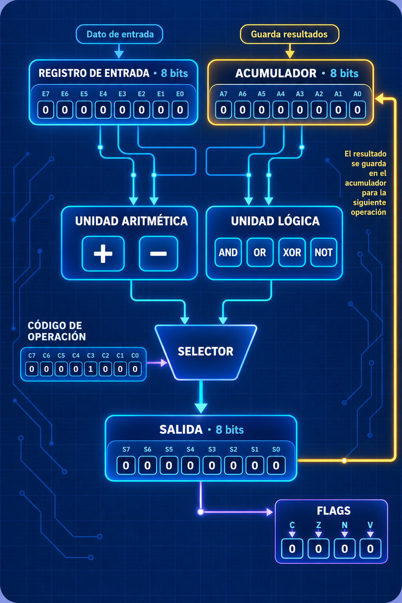

Entrada A
Registro de entrada · operando de 8 bits
Introduce dos operandos de 8 bits, elige una operación y observa el resultado y los flags que activa la unidad aritmético-lógica.
Registro de entrada · operando de 8 bits
Acumulador · operando de 8 bits
Selecciona qué hará la ALU

Se iluminan cuando valen 1
Operación pendiente
Pulsa «Ejecutar operación» para calcular el resultado y actualizar los flags.
La ALU aplica la misma operación en cada columna.
¿Para qué puede servir?